class: center, middle # EE-462 UTILIZATION OF ELECTRICAL ENERGY # AC to DC Motor Drives ## Ozan Keysan ## [keysan.me](http://keysan.me) ### Office: C-113 <span class="meta">•</span> Tel: 210 7586 --- # Review: -- ## Half-wave Controlled Rectifier? -- <img src="https://kullabs.com/uploads/image024.gif" alt="Drawing" style="width: 800px;"/> --- # 1-Ph AC Input DC Motor Drives -- ## Single Phase Full-wave Rectifier 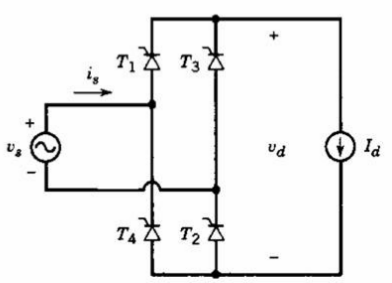 ### Reference [Ch11](http://onlinelibrary.wiley.com/book/10.1002/9781118524336) --- ## Single Phase Full-wave Rectifier 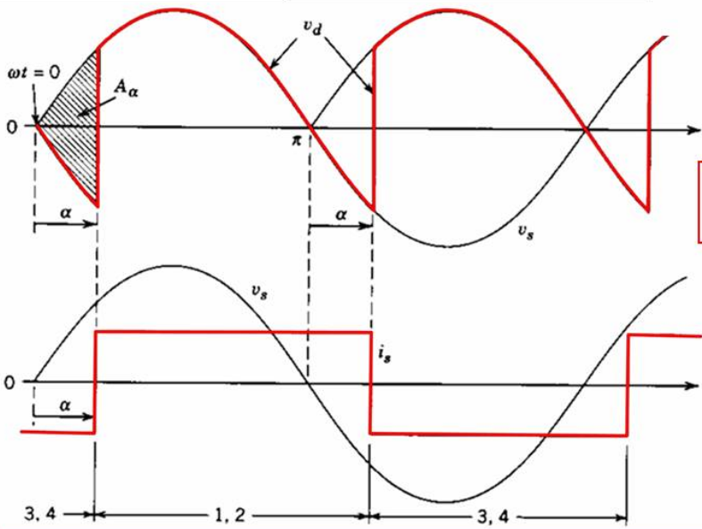 --- ## Single Phase Full-wave Rectifier ## \\( V\_d = \dfrac{1}{\pi} \int\_{\alpha}^{\pi + \alpha} \sqrt{2}V_s sin(\omega t) d(\omega t)\\) -- ## \\( V\_d = \dfrac{2\sqrt{2}}{\pi} V\_s cos (\alpha)\\) -- ## \\( V\_d = 0.9 V\_s cos (\alpha)\\) #### Ref: Mohan Chapter-6: Single Phase Converters --- ## Single Phase Full-wave Rectifier 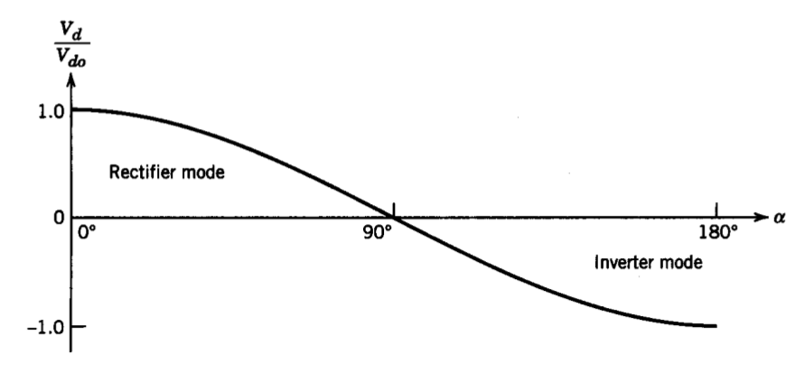 #### Ref: Mohan Chapter-6: Single Phase Converters --- ## Single Phase Full-wave Rectifier ### Harmonics on the Source Side 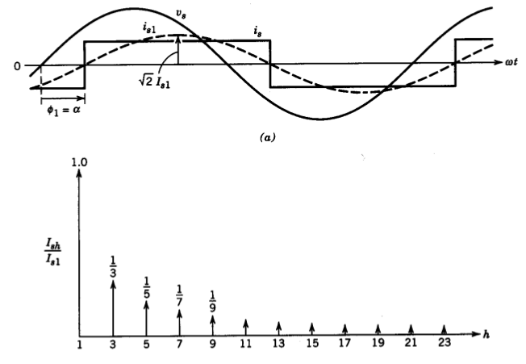 #### Fourier expansion of a square wave --- ## Single Phase Full-wave Rectifier ### with Non-zero Line Inductance (\\(L_s\\)) <img src="./images/ee462/single_phase_full_wave_Ls.png" alt="Drawing" style="width: 500px;"/> ### Implies non-zero commutation period --- ## Single Phase Full-wave Rectifier ### Implies non-zero commutation period <img src="./images/ee462/single_phase_rectifier_commutation .png" alt="Drawing" style="width: 750px;"/> #### Ref: Mohan Chapter-6: Single Phase Converters --- ## Application as a DC Motor Drive <img src="./images/ee462/single_phase_thyristor_drive .png" alt="Drawing" style="width: 500px;"/> --- ## Application as a DC Motor Drive ### Can you plot the waveforms? -- 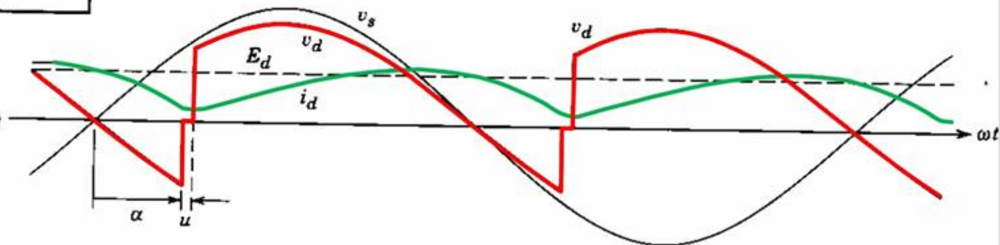 ### Continuous Conduction Mode --- ## Application as a DC Motor Drive ### Continuous Conduction Mode ## \\( V\_d \approx 0.9 V\_s cos (\alpha) - \dfrac{2}{\pi} \omega L\_s I\_{d(min)} \\) --- ## Application as a DC Motor Drive 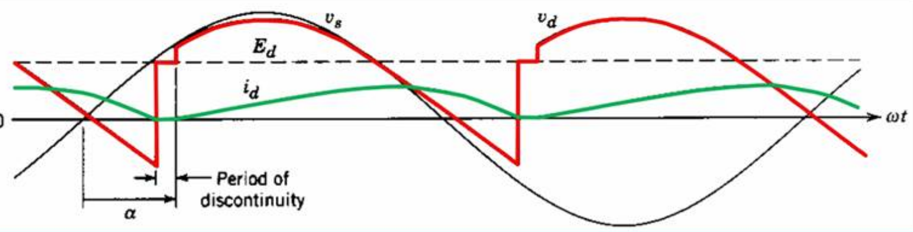 ### Discontinuous Conduction Mode --- # 3-Phase Thyristor Rectifiers 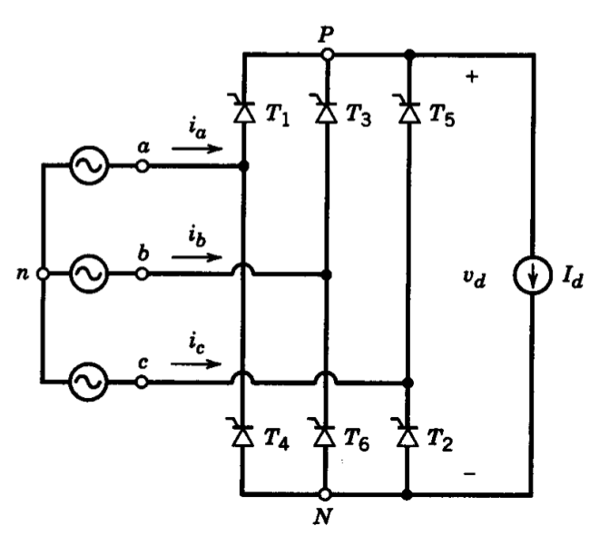 #### Reference: Mohan Chapter 6 --- # 3-Phase Thyristor Rectifiers 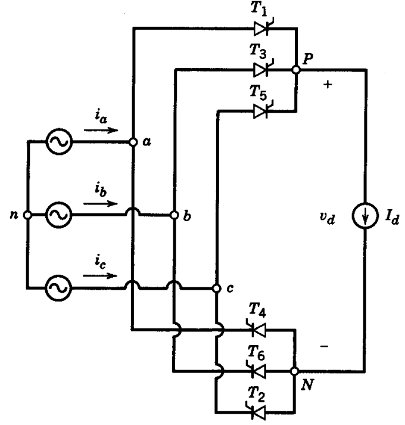 #### Reference: Mohan Chapter 6 --- # 3-Phase Thyristor Rectifiers ## Can you plot the waveforms? ### for a firing angle of 0 degrees. --- 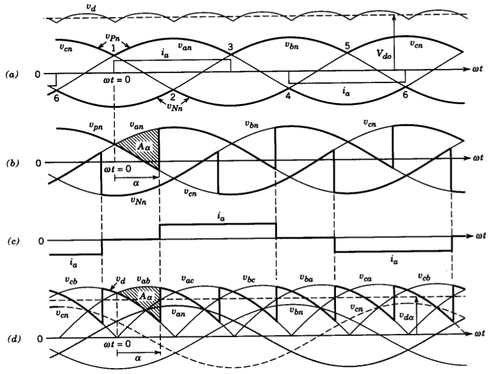 --- # 3-Phase Thyristor Rectifiers 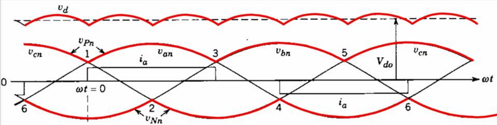 ### What is the relation between Vd and Vll? --- # 3-Phase Thyristor Rectifiers ### \\(V\_{do}= \dfrac{3\sqrt{2}}{\pi}V\_{l-l} = 1.35 V\_{l-l}\\) -- ### \\(V\_{d\alpha}= \dfrac{3\sqrt{2}}{\pi}V\_{l-l} cos (\alpha)= 1.35 V\_{l-l} cos (\alpha)\\) --- # Output Voltage vs. Firing Angle 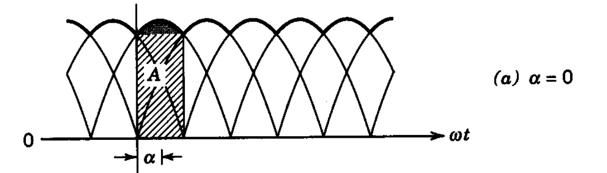 --- # Output Voltage vs. Firing Angle 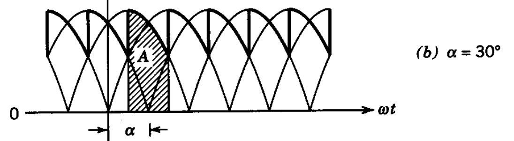 --- # Output Voltage vs. Firing Angle 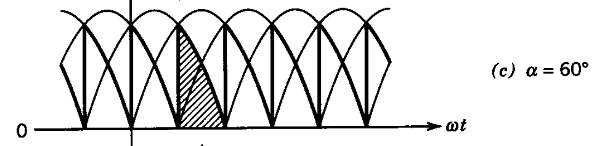 --- # Output Voltage vs. Firing Angle 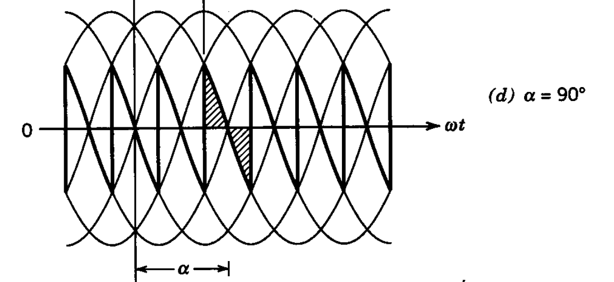 --- # Output Voltage vs. Firing Angle 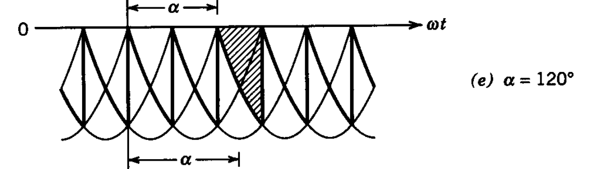 --- # Output Voltage vs. Firing Angle 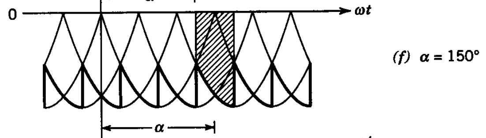 --- # Output Voltage vs. Firing Angle 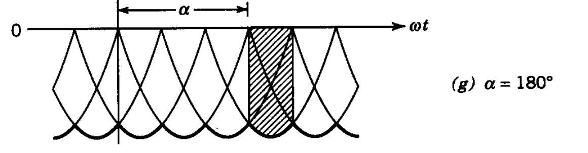 --- ## Input Current Waveform 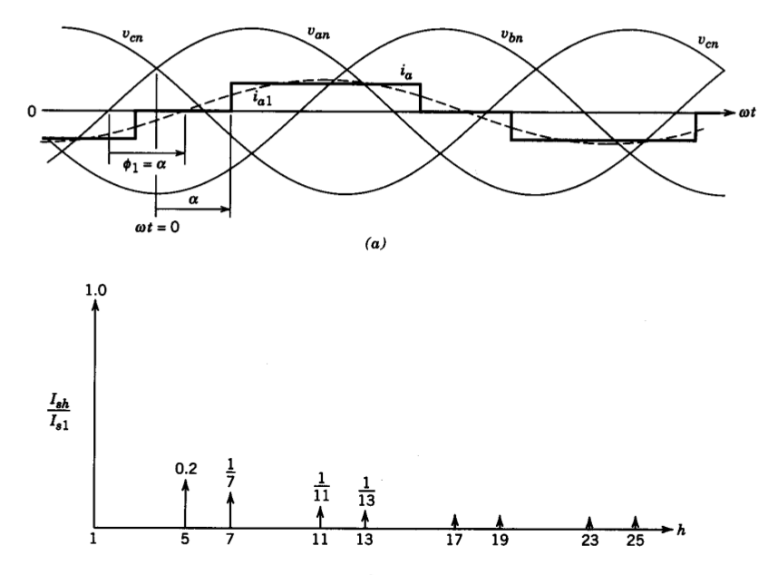 ### No 3rd order harmonics #### Comparison: <a href="https://www.google.com.tr/?gfe_rd=cr&ei=XqrmWLLjEc-z8weYuJvgDA&gws_rd=ssl#q=sin(x)%2Bsin(3x)/3%2Bsin(5x)/5%2Bsin(7x)/7%2Bsin(9x)/9%2Bsin(11x)/11%2Bsin(13x)/13%2Bsin(15x)/15%2Bsin(17x)/17">Single Phase</a>, <a href="https://www.google.com.tr/?gfe_rd=cr&ei=warmWK-gCM-z8weYuJvgDA&gws_rd=ssl#q=sin(x)-sin(5x)/5-sin(7x)/7%2Bsin(11x)/11%2Bsin(13x)/13-sin(17x)/17-sin(19x)/19">Three Phase</a> --- # Effect of Supply Reactance -- ### Introduces a voltage drop on the rectified side - ### Single Phase: \\(\dfrac{2\omega L_s}{\pi}I_a\\) -- - ### Three Phase: \\(\dfrac{3\omega L_s}{\pi}I_a\\) -- - ### Resultant voltage in a 3-ph rectifier: ### \\(V\_{d\alpha}= \dfrac{3\sqrt{2}}{\pi}V\_{l-l} cos (\alpha) - \dfrac{3\omega L_s}{\pi}I_a \\) --- # Applications as DC Motor Drives 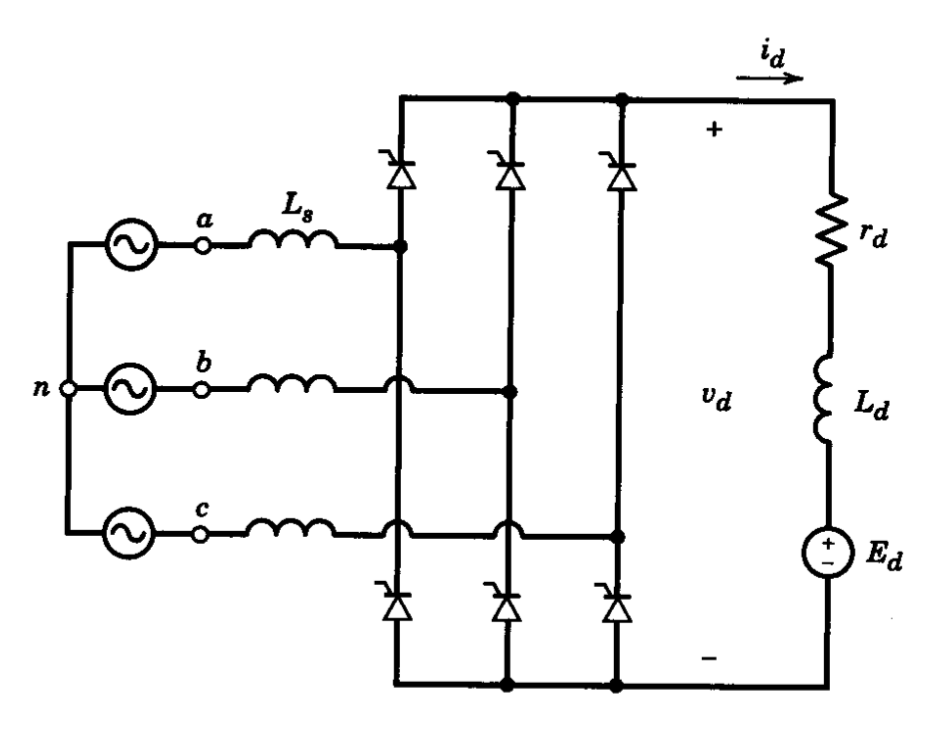 --- # Applications as DC Motor Drives ### Continuous Current Conduction 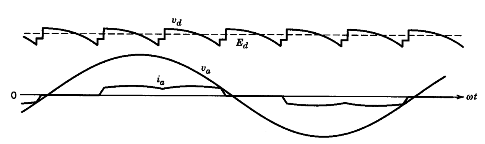 --- # Applications as DC Motor Drives ### Discontinuous Current Conduction 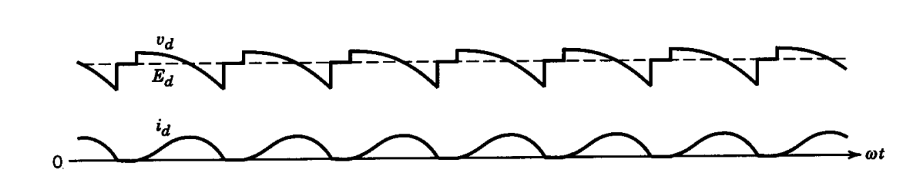 --- # Applications as DC Motor Drives ## Pros and Cons? -- 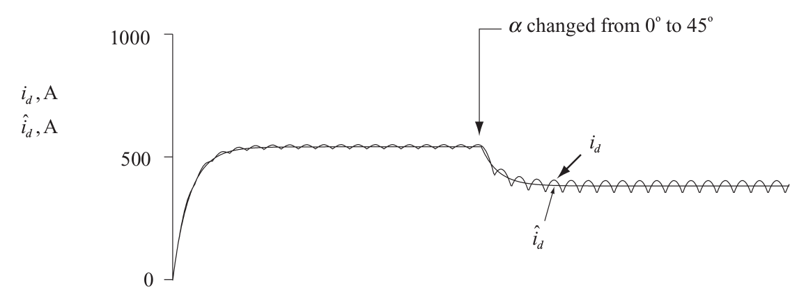 --- # Applications as DC Motor Drives ## In which quadrants can the drive operate? ### Ref: Mohan Chapter 13 DC Motor Drives --- # Applications as DC Motor Drives ## Two Quadrant Operation ## Forward Motoring (Ea>0, Ia>0) ## Reverse Braking (Ea<0, Ia>0) --- # Applications as DC Motor Drives ## How can you obtain four quadrant operation? -- ## Cheap Way: Use a contactor 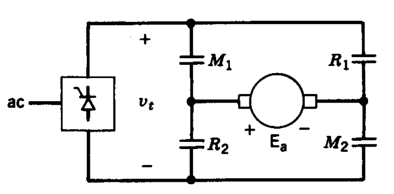 --- # Applications as DC Motor Drives ## How can you obtain four quadrant operation? ## Proper Way: Use two back-to-back rectifiers 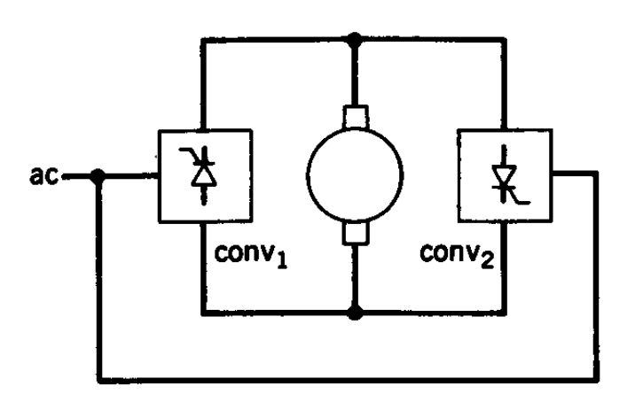 --- ## You can download this presentation from: [keysan.me/ee462](http://keysan.me/ee462)